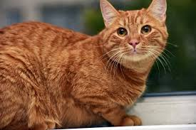
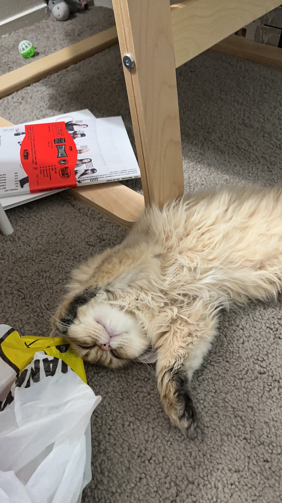

Pets
Bacon Q Dog

bacon.jpg
Brown labradoodle wearing a colorful lei.
Bacon Q. Dog is a 9yr old labradoodle. He prefers to spend his days lounging among the three different beds/couches that his family has gifted him. He enjoys a walk or two around the neighborhood, as long as he can pretend that he doesn't see any of the other animals to avoid the embarrassment of not wanting to admit he has no wolf-like skills in chasing them.
At night just as the rest of the family is ready to relax, Bacon suddenly wants to release all of his energy. He will place his toys on a mini couch and frantically drag the couch around, giving his toys "a ride." There is also a lot of rolling. Lots and lots of rolling.
Photo Gallery

bacon_bandana.jpg
Brown labradoodle wearing an orange bandana.

bacon_graduation.JPG
Small labradoodle puppy
bacon_agility.mov
Girl and dog demonstrating a sit and stay procedure

bacon_halloween.JPG
Brown labradoodle wearing a pirate costume
Likes
- Belly rubs
- Playing tug-of-war
- Sneaking onto the couch
Lily Steinmetz
Charli

charli_laying.jpeg
Light brown labradoodle laying on the floor
Charlie is a 3 year old labradoodle. He loves to spend time with his family, going on walks, and playing around in the snow.
At night Charli likes to watch TV on the bed snuggled up with his parents and getting head scratches.
Photo Gallery

charli_boat.jpeg
Labradoodle sitting and smiling on a boat

charli_snow.jpeg
Labradoodle sitting in the snow

labradoodle.jpeg
Labradoodle laying down in the grass

charli_puppy.jpeg
Small labradoodle sitting on a bed
Likes
- Head Scratches
- Playing in the snow
- Relaxing with family
Lily Steinmetz
Garfield

garfield_1.jpeg
Orange cat laying on a bed
Garfield is a 4 year old orange cat. He is incredibly smart, and loves to play with his toys and climb up his play structures.
At night Garfield loves to lay with his family on the couch while they rub his belly.
Photo Gallery
garfield_2.jpeg
Orange cat sitting on a rug meowing

garfield_3.jpeg
Orange cat in the woods staring off at something

cat.webp
Orange cat laying down on the couch
garfield_4.jpeg
Orange cat sitting on a windowsill
Likes
- Belly Rubs
- Playing with toys
- Climbing up structures
Lily Steinmetz
Sunny

Sunny_1.jpeg
Small golden retriever close up
Sunny is a 4 year old golden retreiver. He is so high energy and such a love bug. Sunny loves to play in the park and meet other dogs, loves to play catch with tennis balls, and loves running through sprinklers.
At night Sunny likes to relax after all of that excersize, so he sits on the couch with his family to eat and watch TV with them.
Photo Gallery

Sunny_2.jpg
Golden retreiever standing on a trail smiling

golden_running.jpeg
Small golden retreiver running through the grass
Sunny_4.jpg
Golden retreiver standing in the grass with tongue out
golden_sitting.jpeg
Golden retreiver sitting in the grass with tongue out
Likes
- The dog park
- Playing Catch
- Running around
Lily Steinmetz
Nuonuo

Nuonuo_main.JPG
The side of fluffy Nuonuo's face
Nuonuo is a 2 year old cat. He is always very mellow and relaxed and loves taking naps around the house. He also loves to be in the car when his family goes on drives and rest on the dashboard.
At night Nuonuo likes to get head scratches on the couch while him and his family relax and watch TV.
Photo Gallery

Nuonuo_car.JPG
A cat lying on top of the dashboard of a car
Nuonuo_sleep2.JPG
A cat taking a nap on the ground.

Nuonuo_wantstoeat.JPG
A cat eyeing some food on a desk, he's hungry

Nuonuo_sleep1.JPG
A cat taking a nap on the floor
Likes
- Taking naps
- Going on drives
- Getting head scratches